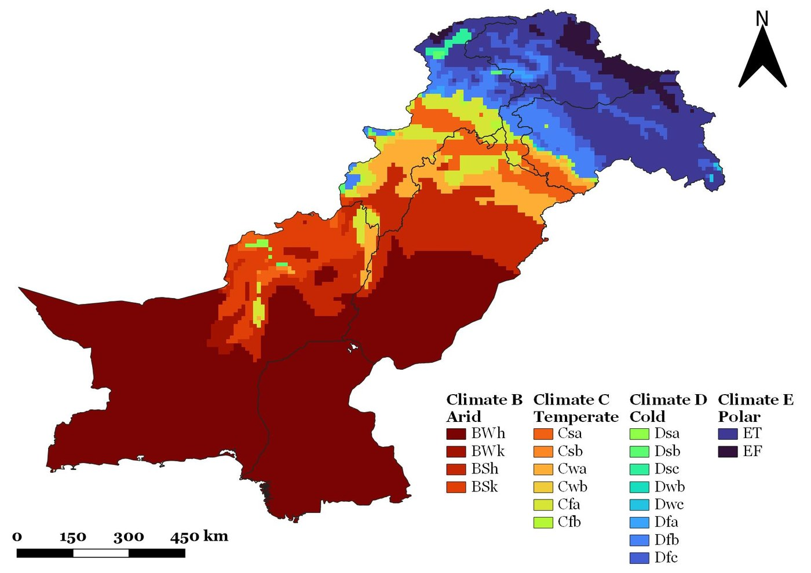
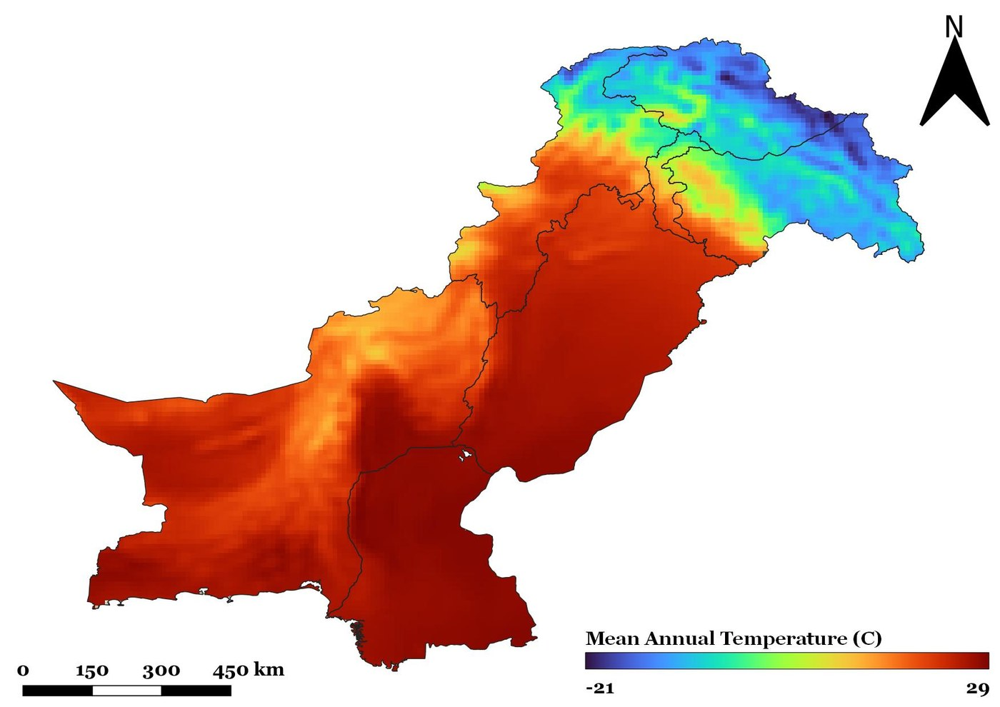
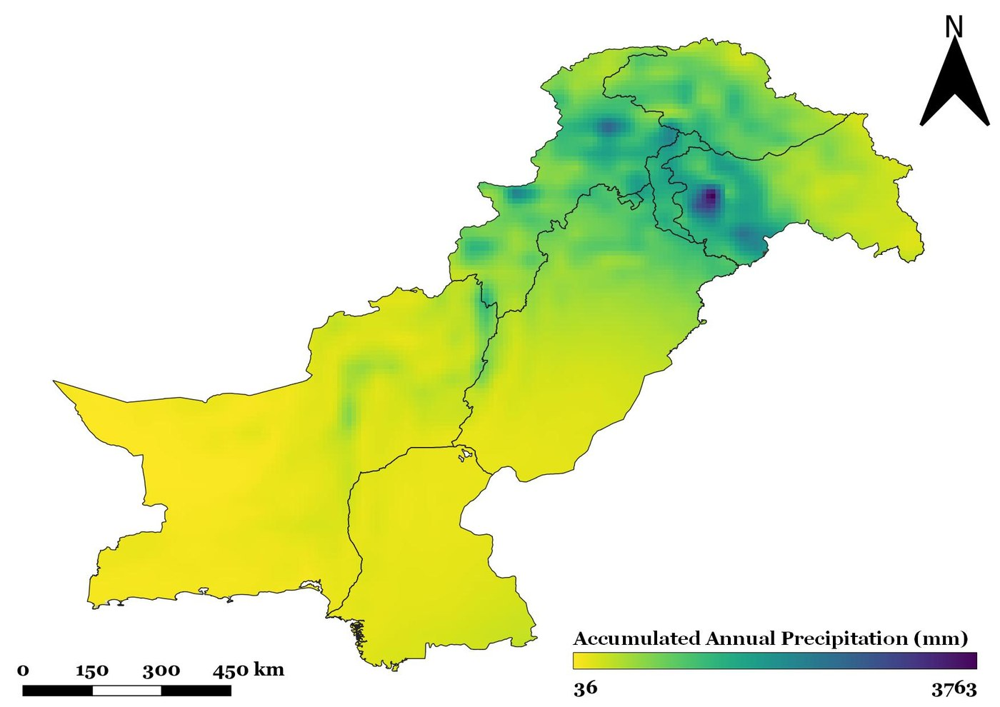

Mapping Pakistan's Köppen-Geiger Climate Zones
A reproducible classification of Pakistan's 1991–2020 climate normal using ERA5-Land temperature and precipitation data.
← Back to ProjectsProject Overview
I implemented the Köppen-Geiger climate classification for Pakistan using the Google Earth Engine
ECMWF/ERA5_LAND/MONTHLY_AGGR collection for January 1991 through December 2020.
Monthly temperature and precipitation data were processed into long-term climatological variables and classified
pixel-by-pixel according to the Peel et al. (2007) Köppen-Geiger criteria.
This was an exploratory climate-data analysis rather than a novel climate-classification study. Its value for my portfolio is in implementing a published rule-based framework, processing long-term gridded climate data and summarizing national-scale spatial patterns.
Approach
Climate Inputs


Output
The classification captures a pronounced south-to-north climatic gradient: extensive arid lowlands in the south and west transition toward temperate, cold and polar classes across the northern high-elevation regions.